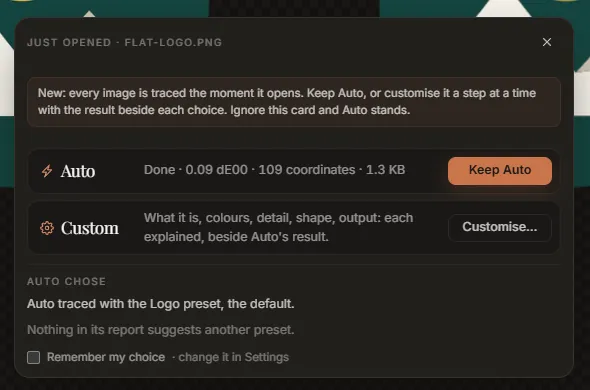
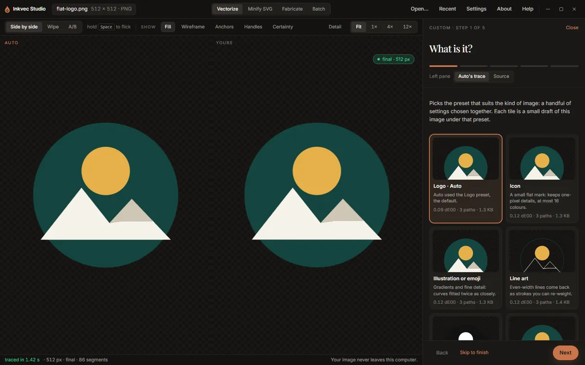

Getting started
This page opens an image, explains the choice the app offers when it does, and walks through the Custom wizard. The fastest way to follow along is with one of the samples on the empty stage.
Opening an image
Any of these opens an image in the Vectorize tab:
- Open… in the app bar, Open an image on the empty stage, or Ctrl+O (⌘+O on a Mac).
- Drag a file onto the window. The whole window takes the drop, not only the dashed box.
- Recent in the app bar: the last eight files you opened.
- A sample from the row under the drop area, on the empty stage: Flat logo, Icon, 64 px, Crest, filigree and Signature, B&W.
- Vectorize with Inkvec in your file manager's right-click menu, once you have added it in Settings (Windows and Linux). If the app is already open, the file opens in the window you have rather than a second copy.
The app reads PNG, JPEG, WebP, GIF, BMP and TIFF. It also opens an SVG: the SVG is drawn at 1024 px on its longer side and traced from that picture, which is how a messy drawing comes back as clean shapes. To make an SVG smaller without re-drawing it, use Minify SVG instead.
What a dropped file does depends on what it is:
| You drop | What happens |
|---|---|
| One image | Opens in Vectorize, whichever tab you were on. |
| One SVG, on the Vectorize tab | Opens in Vectorize, to be re-traced. |
| One SVG, on the Fabricate tab | Opens in Fabricate, to be cut. |
| One SVG, on another tab | Opens in Minify SVG. |
| Several files | Switches to Batch. The files are not queued: Batch works on a folder, so choose the folder they are in. |
The app bar shows the open file's name, its size in pixels and its format.
Studio Lite: there is no right-click entry, and a dropped or chosen file is read by the browser.
Auto traces at once
The moment an image opens, Auto traces it. It uses the controls exactly as you left them the last time (the first time, the Logo preset, which is the default). Nothing has to be chosen first, and the trace is already on its way when the next thing appears.
The choice card: Keep Auto or Customise
Over the stage, a small card appears while Auto traces.

- Auto shows the trace's progress and, once it lands, its colour difference, coordinates and file size. Keep Auto closes the card.
- Custom opens the wizard (next section), which changes the settings a step at a time with your result shown beside Auto's.
- Auto chose says what Auto used, and anything its own report suggests. There are at most two suggestions, and each is a one-click preset change:
| Suggestion | When it appears | What Try does |
|---|---|---|
| Looks like a photo, a scan or a screenshot | The file is a JPEG or a lossy WebP, or its pixels are noisy | Switches to Photo or scan, which uses the denoiser |
| Two colours, black and white | Exactly two inks, one dark and one light, both neutral | Switches to Black & white |
| Drawn with strokes | The report found line work traced as outlines | Switches to Line art |
| A small flat mark | 256 px or smaller, no gradients, at most 16 colours | Switches to Icon |
If the palette has inks that look like the same colour measured twice, a line offers to Accept them as colour groups (see the palette). - Remember my choice makes the button you press next the default for every image. Change it later in Settings, When an image is opened: Ask (this card), Auto only, or Custom wizard.
Closing the card with × or Esc, or simply carrying on, keeps Auto. Once the card is gone, the same Auto chose note stays at the top of the Result tab while it has something to offer, with Customise and Hide.
Nothing here changes a trace by itself. A suggestion you take is an ordinary preset change, shown under Tune like any other, and Back to Auto puts the controls back where Auto had them.
The Custom wizard
Customise… opens the wizard in place of the rail. The big view stays beside it, and its left pane shows Auto's trace (or the Source, if you switch it) so you can compare as you go; the right pane is yours.

Each step says what it does, when to change it, what it costs, and links to the part of How Inkvec works behind it. The steps are:
- What is it? Tiles for the kinds of image, each a small draft of this image under that preset: Logo, Icon, Illustration or emoji (the Fine detail preset), Line art, Black & white and Photo or scan, plus Auto's own result. Presets Auto suggested come first, marked suggested. Hover a tile to see its draft large in the left pane; click it to choose it, and the full trace follows on the right. The drafts are traced one at a time, after Auto's trace, so they never hold it up.
- Clean-up. Only offered when the image looks damaged: a JPEG or a lossy WebP, or pixels that measure noisy, and only in builds that include the denoiser. It says why it was offered. Off traces the pixels as they are; Auto cleans compression damage first, where it finds some. If the denoiser is not downloaded yet, the step offers the download (see the denoiser); in Studio Lite it is already downloading, and the step shows how far it has got.
- Colours. The palette, with suggested colour groups, and Max colours. For an image with transparency, also Trace transparency. Hover an ink or a group to single it out in the drawing.
- Detail. Precision and Speckle floor, and a Compare as switch (side by side or wipe).
- Shape. Editable structure, Fewer paths, Match repeated shapes, Curve cost and Smooth-join angle.
- Output. Transparent background, Margin and Minify, and a list of everything you changed from Auto.
From step 4 on, a small table compares Auto's figures with yours: colour difference, nodes, paths and file size, with the change in each.
What each control does is on the Tune page; the wizard shows the same controls, only fewer at a time.
Along the bottom: Back, Skip to finish (jump to the last step, keeping everything chosen), and Next. On the last step, Finish closes the wizard and Export now closes it and opens the export sheet. At the top, Undo my changes puts every control and colour group back to where they were when the wizard opened, and Close (or Esc) leaves, keeping what you chose.
Whatever the wizard changed is an ordinary setting. When it closes, the rail switches to Tune with those controls marked as changed, and a note says how many moved from Auto.
To reopen the wizard for the image that is open, use Walk me through it at the top of the Tune tab, or Customise on the Auto chose note.
What to do next
- Look at the result: the viewer explains the comparison modes, zoom, and the overlays that show nodes and edges.
- Read the numbers: Result explains the quality report.
- Change something: Tune lists every control.
- Save it: Export.